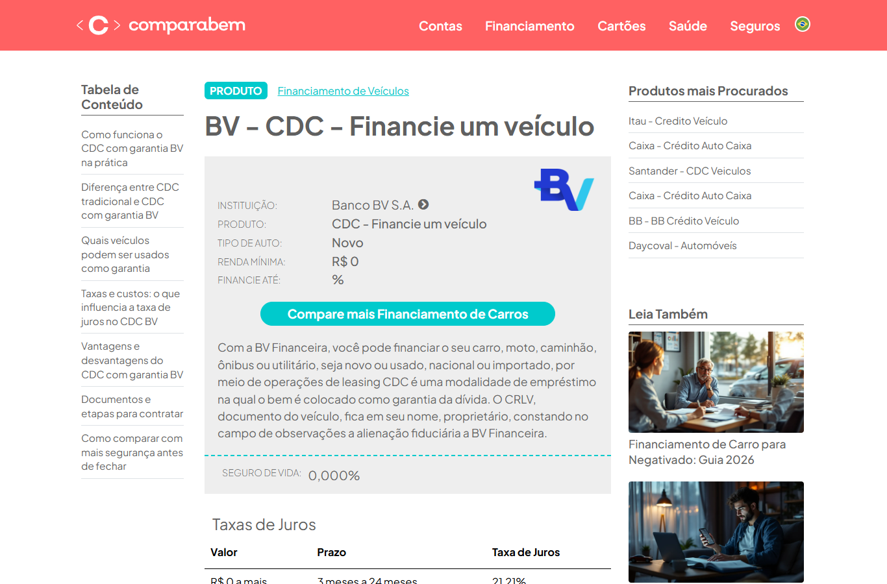
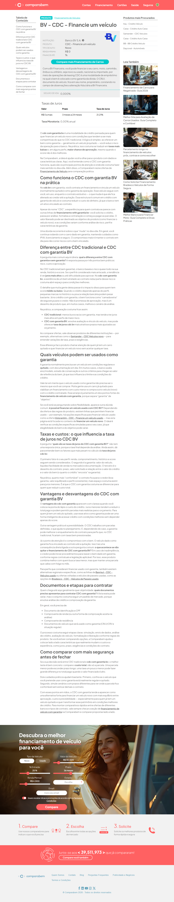

SIMIO · dossiê de candidato · campanha simio-20261119-174043-8bbc · gerado em 2026-11-19T21:22:03+00:00
https://comparabem.com.br/produto/financiamento-veiculos/votorantim-cdc-financie-veiculo-novo
REVIEW_REQUIRED Prioridade MEDIUM · Cenário B_AMBIGUOUS_COMMUNICATION · Revisão humana: PENDING
Este dossiê apresenta indícios para apoio à auditoria. Não constitui conclusão regulatória. As conclusões automatizadas devem ser verificadas contra as evidências brutas abaixo (screenshots, catálogo e arquivos com hash). Conteúdo de terceiros é exibido como texto; links não são clicáveis por segurança.
A URL analisada pertence ao portal comparador de produtos financeiros 'Comparabem' (comparabem.com.br). A página apresenta uma ficha informativa e um artigo explicativo sobre a modalidade 'CDC - Financie um veículo' do Banco BV, utilizando identidade visual, cabeçalho, domínio e rodapé próprios da plataforma Comparabem. O uso do nome e do logotipo do Banco BV ocorre em contexto estritamente informativo e comparativo multibanco (ao lado de ofertas de Itaú, Santander, Caixa, BB, Daycoval e Bradesco), sem qualquer afirmação de oficialidade ou indução a erro quanto à autoria da comunicação. Configura-se o cenário A_LEGITIMATE_COMMERCIAL_MENTION (NO_INDICATION / prioridade LOW).


| Ref | Tipo | Local | Conteúdo |
|---|---|---|---|
| E-URL | domain | url | URL final: https://comparabem.com.br/produto/financiamento-veiculos/votorantim-cdc-financie-veiculo-novo (domínio: comparabem.com.br) |
| E-DISC-001 | text | search_index | Índice de busca (grounding): comparabem.com.br — **Evidência:** Página estruturada em torno da marca (*"Votorantim financiamento de veículos"* / *"CDC com garantia BV"*), apresentando tabelas de taxas e captação para ofertas de financiamento de veículos sem deixar clara de imediato a titularidade da promotora/correspondente |
| E-SHOT-VIEWPORT | screenshot | viewport | evidence\Cebc3f8b19d\attempt-1\viewport.png (sha256 0696e4c6108b0f34…) |
| E-SHOT-FULL | screenshot | page | evidence\Cebc3f8b19d\attempt-1\fullpage.png (sha256 f3e37c4d3d31516e…) |
| E-TITLE | title | head | Votorantim financiamento de veículos 2026 |
| E-META-1 | meta | head | description: BV - CDC - Financie um veículo em detalhe. Ache que você producra com as melhores condições em Comparabem. |
| E-META-2 | meta | head | og:site_name: Comparabem |
| E-META-3 | meta | head | og:title: BV - CDC - Financie um veículo |
| E-META-4 | meta | head | og:description: Ache que você precisa com as melhores condições na Comparabem |
| E-META-5 | meta | head | author: Comparabien |
| E-CANONICAL | meta | head | https://comparabem.com.br/produto/financiamento-veiculos/votorantim-cdc-financie-veiculo-novo |
| E-HEAD-1 | heading | page | BV - CDC - Financie um veículo |
| E-HEAD-2 | heading | page | Como funciona o CDC com garantia BV na prática |
| E-HEAD-3 | heading | page | Diferença entre CDC tradicional e CDC com garantia BV |
| E-HEAD-4 | heading | page | Quais veículos podem ser usados como garantia |
| E-HEAD-5 | heading | page | Taxas e custos: o que influencia a taxa de juros no CDC BV |
| E-HEAD-6 | heading | page | Vantagens e desvantagens do CDC com garantia BV |
| E-HEAD-7 | heading | page | Documentos e etapas para contratar |
| E-HEAD-8 | heading | page | Como comparar com mais segurança antes de fechar |
| E-HEAD-9 | heading | page | Tabela de Conteúdo |
| E-HEAD-10 | heading | page | Produtos mais Procurados |
| E-HEAD-11 | heading | page | Leia Também |
| E-HDR | text | header | Contas Financiamento Cartões Saúde Seguros |
| E-FOLD | text | viewport (acima da dobra) | Contas Financiamento Cartões Saúde Seguros PRODUTO Financiamento de Veículos BV - CDC - Financie um veículo Instituição: Banco BV S.A. Produto: CDC - Financie um veículo Tipo de Auto: Novo Renda Mínima: R$ 0 Financie Até: % Compare mais Financiamento de Carros Com a BV Financeira, você pode financiar o seu carro, moto, caminhão, ônibus ou utilitário, seja novo ou usado, nacional ou importado, por meio de operações de leasing CDC é uma modalidade de empréstimo na qual o bem é colocado como garantia da dívida. O CRLV, documento do veículo, fica em seu nome, proprietário, constando no campo de observações a alienação fiduciária a BV Financeira. Seguro de Vida: 0,000% Taxas de Juros Valor Prazo Taxa de Juros R$ 0 a mais 3 meses a 24 meses 21,21% Tabela de Conteúdo Como funciona o CDC com garantia BV na prática Diferença entre CDC tradicional e CDC com garantia BV Quais veículos podem ser usados como garantia Taxas e custos: o que influencia a taxa de juros no CDC BV Vantagens e desvantagens do CDC com garantia BV Documentos e etapas para contratar Como comparar com mais segurança antes de fechar Produtos mais Procurados Itau - Credito Veículo Caixa - Crédito Auto Caixa Santander - CDC Veiculos Caixa - Crédito Auto Caixa BB - BB Crédito Veículo Daycoval - Automóveís Leia Também Financiamento de Carro para Negativado: Guia 2026 Melhor Site para Avaliação de Carros Usados: Guia Completo e Confiável |
| E-FTR | text | footer | Quem Somos Contato Blog Perguntas Frequentes Publicidade e Negócios Termos e Condições ® Comparabem 2026 - Todos os direitos reservados |
| E-NAV | nav | header | <https://comparabem.com.br/> | Contas <https://comparabem.com.br/produto/financiamento-veiculos/votorantim-cdc-financie-veiculo-novo> | Financiamento <https://comparabem.com.br/produto/financiamento-veiculos/votorantim-cdc-financie-veiculo-novo> | Cartões <https://comparabem.com.br/cartoes-credito> | Saúde <https://comparabem.com.br/produto/financiamento-veiculos/votorantim-cdc-financie-veiculo-novo> | Seguros <https://comparabem.com.br/produto/financiamento-veiculos/votorantim-cdc-financie-veiculo-novo> | Brasil <https://comparabem.com.br/produto/financiamento-veiculos/votorantim-cdc-financie-veiculo-novo> |
| E-CTA-1 | cta | page | Compare mais Financiamento de Carros <https://comparabem.com.br/financiamento-veiculos> |
| E-CTA-2 | cta | page | Escolha |
| E-CTA-3 | cta | page | Compare |
| E-CTA-4 | cta | page | Compare você também <https://comparabem.com.br/> |
| E-CONTACT-1 | contact | footer | Facebook <https://www.facebook.com/comparabem> |
| E-CONTACT-2 | contact | footer | Instagram <https://www.instagram.com/comparabem> |
| E-IMG-1 | image | page (acima da dobra) | imagem alt='Banco BV S.A.' src=https://cdn-br.comparabien.com/logos/bv.png (120x65, acima da dobra) |
| E-TXT-001 | text | page | BV - CDC - Financie um veículo |
| E-TXT-002 | text | page | Banco BV S.A. |
| E-TXT-003 | text | page | Com a BV Financeira, você pode financiar o seu carro, moto, caminhão, ônibus ou utilitário, seja novo ou usado, nacional ou importado, por meio de operações de leasing CDC é uma modalidade de empréstimo na qual o bem é colocado como garantia da dívida. O CRLV, documento do veículo, fica em seu nome, proprietário, constando no campo de observações a alienação fiduciária a BV Financeira. |
| E-TXT-004 | text | page | O cdc com garantia bv é uma modalidade de crédito pensada para quem quer financiar um veículo novo com condições que tendem a ser mais competitivas do que no CDC tradicional. A lógica é simples: ao oferecer um bem como garantia — geralmente um veículo já quitado — você reduz o risco da operação para o banco. Na prática, isso costuma se traduzir em taxas mais baixas e, em alguns perfis, maior |
| E-TXT-005 | text | page | Como funciona o CDC com garantia BV na prática |
| E-TXT-006 | text | page | No cdc bv com garantia, você contrata um financiamento e vincula um veículo (normalmente quitado) como garantia da operação. Esse veículo segue com você, em uso, enquanto o contrato está ativo — o que muda é que ele fica alienado ao credor até a quitação. Essa estrutura é comum em crédito com garantia de veículo e costuma reduzir o custo do dinheiro, já que o banco tem um ativo vinculado ao |
| E-TXT-007 | text | page | Apesar do nome “CDC”, a experiência para quem contrata se parece com outras linhas de financiamento with garantia bv: você solicita o crédito, passa por análise, formaliza a contratação e começa a pagar as parcelas. O valor liberado pode ser destinado ao objetivo do produto (como financiar o veículo novo), e as condições variam conforme análise de risco, perfil e características da garantia. |
| E-TXT-008 | text | page | Diferença entre CDC tradicional e CDC com garantia BV |
| E-TXT-009 | text | page | No CDC tradicional (sem garantia), o banco baseia o risco quase todo na sua renda, histórico e score. Se o perfil é considerado mais arriscado, a tendência é ver juros mais altos ou até dificuldade para aprovar. No cdc com garantia bv, a existência de um bem atrelado ao contrato reduz parte desse risco e costuma abrir espaço para condições melhores. |
| E-TXT-010 | text | page | CDC com garantia BV: envolve avaliação e vínculo do veículo, mas pode oferecer taxa de juros cdc bv mais atrativa e prazos mais ajustados ao orçamento. |
| E-TXT-011 | text | page | A garantia normalmente precisa ser um veículo em condições regulares e quitado, com documentação em dia. Em muitos casos, o banco avalia ano/modelo, estado de conservação e outros critérios para chegar ao valor de referência do bem, já que isso influencia o limite e as condições do crédito. |
| E-TXT-012 | text | page | Se você está se perguntando sobre flexibilidade, aparece outra dúvida comum: é possível financiar um veículo usado com CDC BV? Dependendo da oferta e das regras do produto, existem linhas que permitem financiar usado — por exemplo, há opções específicas para financiar veículo usado como a oferta Votorantim - CDC - Financie um veículo usado — mas esta página está focada no contexto de financiar um |
| E-TXT-013 | text | page | Taxas e custos: o que influencia a taxa de juros no CDC BV |
| E-TXT-014 | text | page | A pergunta “quais são as taxas de juros do CDC com garantia BV?” não tem uma resposta única, porque a taxa final depende da análise. Ainda assim, dá para entender bem os fatores que mais pesam no cálculo da taxa de juros cdc bv. |
| E-TXT-015 | text | page | Vantagens e desvantagens do CDC com garantia BV |
| E-TXT-016 | text | page | Já o ponto de atenção é o compromisso com o bem. O veículo dado como garantia fica vinculado ao contrato até a quitação. Isso traz uma consequência direta ligada a outra pergunta comum: o que acontece se não quitar o financiamento do CDC com garantia BV? Em caso de inadimplência, o credor pode iniciar procedimentos para reaver o bem dado em garantia, conforme regras contratuais e legislação |
| E-TXT-017 | text | page | Se a sua decisão está entre CDC tradicional e cdc com garantia bv, o melhor teste é bem concreto: compare o custo total, não só a parcela. Uma parcela menor pode esconder prazo longo; uma taxa um pouco menor pode fazer grande diferença no total pago quando o valor financiado é alto. |
| E-TXT-018 | text | page | Com esses pontos em mãos, o CDC com garantia tende a aparecer como uma alternativa forte para financiar um veículo novo com mais equilíbrio entre aprovação, custo e previsibilidade — especialmente para quem já tem um veículo quitado e quer transformar esse patrimônio em condições melhores de crédito. Para montar comparativos rápidos entre ofertas de diferentes bancos e tipos de contrato, vale |
| E-TXT-019 | text | page | Como funciona o CDC com garantia BV na prática |
| E-TXT-020 | text | page | Diferença entre CDC tradicional e CDC com garantia BV |
| E-TXT-021 | text | page | Taxas e custos: o que influencia a taxa de juros no CDC BV |
| E-TXT-022 | text | page | Vantagens e desvantagens do CDC com garantia BV |
| E-TXT-023 | text | page | Melhor Banco para Financiar Moto: Guia Completo e Dicas Práticas |
| Dimensão | Sinal | Achado | Refs |
|---|---|---|---|
| VISUAL_IDENTITY | LEGITIMATE | A página apresenta identidade visual própria do portal comparador 'Comparabem' (cabeçalho em tom salmão/vermelho, logotipo '< C > comparabem' no topo e no rodapé), sem imitar a identidade visual do Banco BV. | E-SHOT-VIEWPORT E-SHOT-FULL E-META-2 E-FTR |
| DECLARED_COMMERCIAL_IDENTITY | LEGITIMATE | O site identifica-se claramente como a plataforma 'Comparabem' no domínio (comparabem.com.br), cabeçalho, metadados e rodapé, atuando como um portal comparador de produtos financeiros de múltiplas instituições. | E-URL E-META-2 E-SHOT-VIEWPORT E-FTR |
| CORRESPONDENT_TRANSPARENCY | NEUTRAL | Não há declaração formal de correspondente bancário nem exibição de CNPJ no material coletado, mas a natureza da página é claramente editorial/comparador multibanco, atribuindo explicitamente o produto à 'Instituição: Banco BV S.A.'. | E-FOLD E-SHOT-VIEWPORT E-FTR |
| INSTITUTIONAL_LANGUAGE | LEGITIMATE | O texto utiliza linguagem descritiva e informativa em terceira pessoa sobre o produto ('O cdc com garantia bv é uma modalidade...', 'Na Comparabem, a ideia é ajudar você a olhar para o produto...'), sem se passar pelo banco. | E-TXT-004 E-TXT-006 E-TXT-014 E-SHOT-FULL |
| LOGO_USAGE | LEGITIMATE | O logotipo do Banco BV é utilizado de forma contextualizada dentro de uma ficha catalográfica informativa do produto ('BV - CDC - Financie um veículo'), ao lado da indicação 'Instituição: Banco BV S.A.'. | E-IMG-1 E-SHOT-VIEWPORT E-FOLD |
| SERVICE_JOURNEY | LEGITIMATE | A jornada oferecida é típica de um portal comparador de crédito ('Compare mais Financiamento de Carros', simulador genérico ao final da página para comparar opções de mercado), sem oferta de serviços pós-venda ou atendimento em nome do banco. | E-CTA-1 E-CTA-3 E-CTA-4 E-SHOT-FULL |
| CONTACT_CHANNELS | LEGITIMATE | Os canais de contato e redes sociais listados no rodapé pertencem exclusivamente à plataforma Comparabem, sem uso de contatos que simulem atendimento do Banco BV. | E-CONTACT-1 E-CONTACT-2 E-SHOT-FULL |
| CONSUMER_CONFUSION | LEGITIMATE | Não há risco de confusão para o consumidor: fica evidente que o usuário está navegando no portal Comparabem, que lista e analisa produtos do Banco BV e de diversos outros bancos concorrentes (Itaú, Caixa, Santander, BB, Daycoval, Bradesco, Banrisul). | E-FOLD E-SHOT-VIEWPORT E-SHOT-FULL |
A URL analisada pertence ao portal comparador de produtos financeiros 'Comparabem' (comparabem.com.br). A página apresenta uma ficha informativa e um artigo explicativo sobre a modalidade 'CDC - Financie um veículo' do Banco BV, utilizando identidade visual, cabeçalho, domínio e rodapé próprios da plataforma Comparabem. O uso do nome e do logotipo do Banco BV ocorre em contexto estritamente informativo e comparativo multibanco (ao lado de ofertas de Itaú, Santander, Caixa, BB, Daycoval e Bradesco), sem qualquer afirmação de oficialidade ou indução a erro quanto à autoria da comunicação. Configura-se o cenário A_LEGITIMATE_COMMERCIAL_MENTION (NO_INDICATION / prioridade LOW).
Nenhum CNPJ ou razão social identificáveis no conteúdo coletado.
| Tipo | Valor | Ref | Contexto |
|---|---|---|---|
| domain | comparabem.com.br | E-URL | |
| institution_name_displayed | Banco BV S.A | E-FOLD | |
| social_profile | https://www.facebook.com/comparabem | E-CONTACT-1 | |
| social_profile | https://www.instagram.com/comparabem | E-CONTACT-2 | |
| trade_name | Comparabem | E-META-2 |
Mapeamento indicativo para apoio à auditoria. Não constitui conclusão regulatória; a decisão definitiva pertence à auditoria.
Fonte: NORMATIVE
Art. 14. O contrato de correspondente deve estabelecer: [...] II - vedação à utilização, pelo contratado, de logomarca ou de outros atributos que sejam similares aos adotados pela instituição contratante em suas agências, postos de atendimento, sítio eletrônico na internet, aplicativo ou outras plataformas de comunicação em rede;
Hipótese: Uso de logomarca ou de atributos similares aos adotados pela contratante em seus canais. A norma disciplina correspondentes contratados; o responsável não foi identificado como correspondente.
Evidência observada: E-IMG-1
Informação faltante:
Fonte: NORMATIVE
Art. 14. O contrato de correspondente deve estabelecer: [...] III - divulgação ao público, pelo contratado, de sua condição de prestador de serviços à instituição contratante, identificada pelo nome com que é conhecida no mercado, com descrição dos produtos e serviços oferecidos e canais de contato da instituição contratante, inclusive de sua ouvidoria, em local visível, em destaque e em formato legível, por meio de: a) sítio eletrônico do correspondente na internet, acessível na página inicial; b) aplicativo e outras plataformas de comunicação em rede do correspondente; [...]
Hipótese: Há declaração da condição de correspondente/prestador, mas outros elementos da página (apresentação da marca) podem contradizê-la ou reduzir seu efeito (destaque, legibilidade e identificação da contratante a verificar). A norma disciplina correspondentes contratados; o responsável não foi identificado como correspondente.
Evidência observada: E-FOLD E-FTR
Informação faltante:
Fonte: NORMATIVE
Art. 3º O correspondente atua por conta e sob as diretrizes da instituição contratante, que assume inteira responsabilidade pelo atendimento prestado aos clientes e usuários por meio do contratado.
Evidência observada: E-CONTACT-1 E-CONTACT-2 E-CTA-1 E-CTA-3 E-CTA-4 E-SHOT-FULL
Se o responsável não for correspondente contratado, os indícios podem caracterizar uso indevido de marca ou fraude, fora do escopo da Res. 4.935: avaliar encaminhamento às áreas jurídica/segurança.
Limitações: requisitos contratuais/internos não fornecidos: mapeamento limitado ao texto normativo
| Fonte | Consulta / hipótese | URL original | Título / trecho |
|---|---|---|---|
| grounding | páginas de financiamento de carro usando a marca Banco BV ou bv financeira mantidas por lojas, promotoras ou correspondentes bancários onde a marca do banco aparece em destaque principal, com simulador ou captação sem identificar claramente a condição de correspondente independente H2-product:financiamento de carro | https://comparabem.com.br/produto/financiamento-veiculos/votorantim-cdc-financie-veiculo-novo | comparabem.com.br **Evidência:** Página estruturada em torno da marca (*"Votorantim financiamento de veículos"* / *"CDC com garantia BV"*), apresentando tabelas de taxas e captação para ofertas de financiamento de veículos sem deixar clara de imediato a titularidade da promotora/correspondente |
Original: https://comparabem.com.br/produto/financiamento-veiculos/votorantim-cdc-financie-veiculo-novo
Final: https://comparabem.com.br/produto/financiamento-veiculos/votorantim-cdc-financie-veiculo-novo
| Artefato | Caminho | SHA-256 | Bytes |
|---|---|---|---|
| screenshot_viewport | evidence\Cebc3f8b19d\attempt-1\viewport.png | 0696e4c6108b0f344d00d1c32fd49878b555d49b862d5314cd6bb638d77a73d3 | 334353 |
| screenshot_full | evidence\Cebc3f8b19d\attempt-1\fullpage.png | f3e37c4d3d31516ec63ae17044b73dbdad4714deba14e4a1480892c1578a8182 | 2307958 |
| html | evidence\Cebc3f8b19d\attempt-1\page.html.txt | 3260658e1e60dc4a2f6c723ce2acd394ead74a16a1c9d172e9b4cbf2c4037f29 | 69848 |
| text | evidence\Cebc3f8b19d\attempt-1\text.txt | 4fa6f89547ab598c3664d19436f5e7afcc5f0a8fa7a5694286e99f78bab7504b | 12151 |
| page_data | evidence\Cebc3f8b19d\attempt-1\page.json | 0b9f44540f347fc27d34419e014535ef31ca7581350e43ff734392fb61b3c509 | 29605 |
| Quando | De | Para | Nota |
|---|---|---|---|
| 2026-11-19T18:10:11+00:00 | DISCOVERED | QUEUED | prioritised (score 0.0) |
| 2026-11-19T18:31:01+00:00 | QUEUED | COLLECTING | |
| 2026-11-19T18:31:15+00:00 | COLLECTING | COLLECTED | |
| 2026-11-19T18:31:15+00:00 | COLLECTED | ANALYZING | |
| 2026-11-19T18:31:47+00:00 | ANALYZING | COMPLETED |